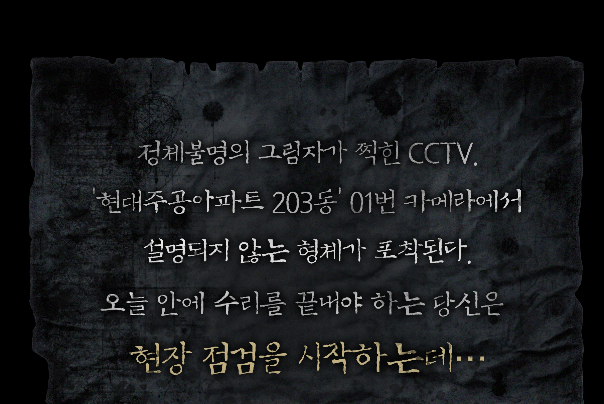
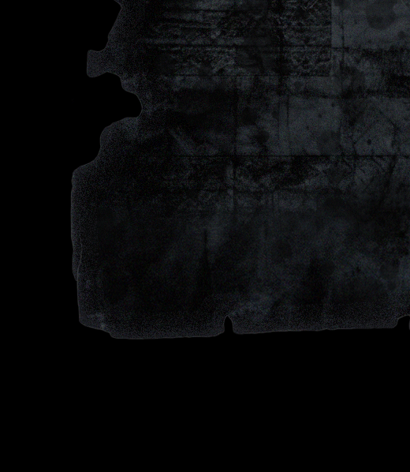
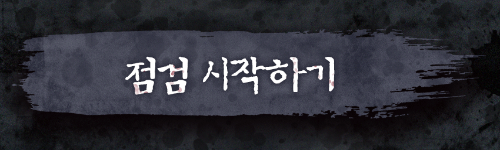
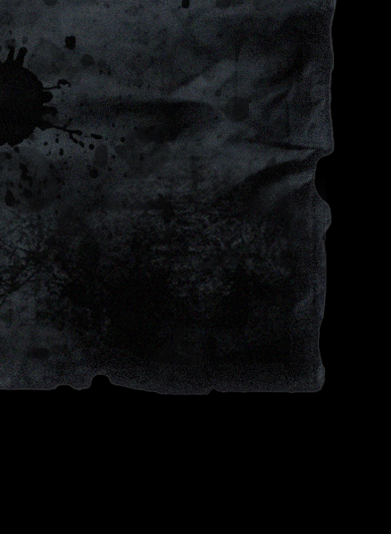
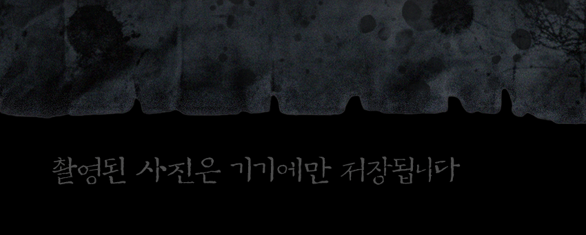

♪





01_CCTV_document.mov 를 로드합니다.
CAM 01
01_CCTV_document.mov 를 로드합니다.
저장 중...
셔터를 눌러 현장조사를 시작하세요
촬영된 사진은 기기에만 저장됩니다
CAM 01
CAM 02
CAM 03
CAM 04
CAM 01 이상없음
CAM 02 이상없음
CAM 03 이상없음
CAM 04 NO SIGNAL
저장
다시 찍기
공유하기